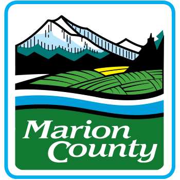

Hi, my name is Max Oakes.
I like to build things; and I aspire to build something revolutionary.
I am a recent computer science graduate who obtained a Master's of Science in Computer Science from Portland State University. I enjoy road trips, spicy food, virtual reality, and basically all forms of natural science from geology to astronomy.
In my free time, I like fiddling with code to make fun and useful programs, or using Blender to make neat scenes, landscapes and objects. I also occasionally dabble in photography and cooking.
Education
Portland State University
March 2021 - March 2023
Master of Science, Computer Science
Portland, OR
Graduate GPA: 4.00 of 4.00
Relevant Coursework:
- Concepts in Operating Systems
- Front-End Development
- Code Reading & Review
- Virtual Reality
- Foundations in Emerging Tech
- Wireless Networks & Applications
- Internetworking Protocols
- Database Management Systems
- Software Testing and Implementation
- Unit Testing and Branching Strategies
- Voice Assistants
- Reinforced Learning
- Theory of Computation
- Intro to Computational Imaging
- Full Stack Web Development
HTML CSS Javascript Python SQL React LaTeX Bootstrap PostgreSQL xUnit Docker Git Unix Probability Theory Computational Imaging
Portland Community College
January 2021 - March 2021
Assorted Courses
Portland, OR
Relevant Coursework:
- Javascript for Web Developers
- Managing a Windows Server Environment
Javascript HTML CSS Windows Server 2016
University of Portland
August 2013 - May 2017
Bachelor of Science, Computer Science
Portland, OR
Major GPA: 3.41 of 4.00
Overall GPA: 3.28 of 4.00
Relevant Coursework:
- Compiler Design
- Database Management Systems
- Computer Networks & Internetworks
- Analysis of Algorithms
- Artificial Intelligence
- Operating Systems
- Theory of Computation
- Computer Architecture
- Software Engineering
- Programming Languages
- Game Design & Theory
- UNIX Tools Laboratory
- Data Structures
- Object-Oriented Design
- Remote Sensing & GIS
Java C C# Python SQL MIPS MySQL Unity Game Engine Git Unix ArcGIS
Work Experience
Marion County
June 2023 - Present

Programmer Analyst 1
Salem, OR
Duties:
- Develop, test, deploy, and maintain in-house application solutions using a variety of languages, platforms and environments supporting the county
- Analyze and fulfill requests to create and update SSRS reports referencing a variety of databases
- Assist team members in troubleshooting, diagnosis, and repair of application malfunctions
- Respond to incident tickets assigned by lead programmer analyst
- Monitor production programs for expected performance
- Assist with ongoing technical and administrative support for commercial-off-the-shelf, custom developed, and packaged applications
Accomplishments:
- Recreated several desktop applications using C# .NET Framework that were previously created in MS Access, some of which are business or mission critical. Although the overall goal is to remove MS Access from the County's environment, I took the opportunity to optimize user workflows, add in long-desired user requirements, and improve the accompanying databases.
- Rewrote Plat Tracker, a mission critical website used by Public Works to track the approval process for PLAs and various types of plats within the county.
- Created several dozen SSRS reports for multiple departments
- Served as primary system admin for a dozen newly-developed and decades-old in-house applications, and third-party commercial-off-the-shelf tools
- Created installation and deployment scripts for several dozen applications across all County departments for both Microsoft Endpoint Configuration Manager (ECM) and Intune. Among all developers creating these scripts, I created the most for both ECM and Intune.
C#.NET VB.NET ASP.NET VisualBasic T-SQL PL/SQL PowerShell Microsoft Access Toad SQL Server Management Studio (SSMS) SQL Server Reporting Services (SSRS) PowerApps Microsoft Endpoint Configuration Manager (ECM) Micrsoft Intune Dev Ops Footprints Microsoft Word Microsoft Excel
Orbis Education
September 2018 - December 2020
Nursing Education Coordinator
Portland, OR
Duties:
- Provide administrative support to academic team
- Ensure students are in compliance with hospital clinical site health and safety standards
- Orient students to immunization requirements and compliance maintenance
- Assist in managing master administrative schedule and academic calendar
- Prepare, troubleshoot, and maintain computers for student exams
- Proctor student exams
Accomplishments:
- Wrote a variety of programs in Python to automate previously tedious tasks, frequently saving several hours of work per week
- Developed academic calendar used by over 400 concurrent students across multiple locations
- Created workflow of all tasks performed by nursing admin team, allowing for timely task allocation in a growing nursing program
- Coordinated 120 incoming students per semester to ensure compliance with mandatory hospital clinical site safety and vaccination standards
Python Microsoft Word Microsoft Excel Microsoft Powerpoint Microsoft Teams Google Docs Google Sheets
University of Portland
November 2016 - May 2017
Student Web Developer
Portland, OR
Duties:
- Developed Java web applets for use by students and faculty using the MVC design pattern
- Convened with faculty and university staff to outline requirements for new web applications
- Improved existing Java web applets by identifying and fixing several bugs and adding functionality
Java HTML CSS Javascript
Volunteering
Free Geek
January 2010 - November 2013
Hardware Evaluator
Portland, OR
Duties:
- Disassembled a variety of donated computers and determined whether parts are to be reused or recycled by following established procedures
- Sorted computer components based on technical specifications, requiring the ability to quickly inspect physical hardware and BIOS information
- Installed software and performed quality assurance on outgoing computers using the Ubuntu operating system
Unix Hardware Identification
JWST Image ProcessingA venture into computational imaging. The goal is to automate the pipeline of acquiring James Webb Space Telescope NIRCam imaging data, combining it and displaying a full color RGB image.
Here is the source code and report of the project.
Python NumPy AstroPy Computational Imaging
Big Data: Known AsteroidsA project for my graduate DBMS course. The goal was to fill a database with data of our choosing and answer questions based on the information in that data. I wrote my own Python script to extract rows from a CSV file to fill a database table.
Here is the presentation of this project.
Python SQL PostgreSQL
Asteroid VisualizerA continuation of a DBMS project. This full stack project uses a frontend written in React, and a backend written in Typescript. Also includes other services for a PostresSQL database, Minio file storage and a .NET microservice. This website visualizes asteroids whose data are stored in a backend database. Web browser rendering is done through THREE.js and React-Three-Fiber.
Here is the source code of this project.
HTML CSS Javascript C# .NET React PostgresSQL THREE.js React-Three-Fiber Git Docker APIs
Cruel SunA addon (mod) written in Java for Minecraft making the sun and moon harmful to all living entities and players. This mod is designed to drastically change the flow of gameplay, and is highly configurable.
Here is the Github link to this project.
Java Maven Git
ARMA Missions A project that I did while not taking summer PSU classes. The game Arma 3 is a military sim that offers users the ability to create their own complex missions using the SQF scripting language. I have been fiddling around with mission creation for many years, but I wanted to dedicate several weeks to overhaul all of my previous missions and create new ones using algorithms and proper programming techniques that I had learned in school. The handful of missions that I had created utilized concurrent script executions and worked in a multiplayer environment.
Here is the Github link to the missions.
SQF Algorithms Concurrent Programming
RSA to GNU RadioThis was my undergraduate capstone. The goal was to connect a Tektronix RSA (radio spectrum analyzer) to GNU Radio (a software defined radio). Tekronix had only one piece of software to see waveforms, and nothing for signal processing. This project opened the door for many possibilities for the Tektronix RSA.
Here is our team's final report and presentation we gave to Tektronix.
C++ Unix/Ubuntu GNU Radio